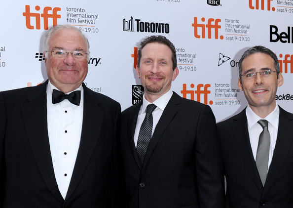

|
Mary Surratt was originally from Maryland, from what is now known as Clinton. What
other connections to the state are there?
Surratt was originally going to be defended by Reverdy Johnson, who was a U.S. senator
from Maryland. As depicted in the movie by Tom Wilkinson, he basically decided he was a
good ol' Southern boy and there was no way he could effectively defend Surratt in this
|

The executives who oversaw production of The Conspirator
at the film's premiere. Left to right are Joe Ricketts, Brian Peter Falk and Alfred Levitt.
|
trial because of the passions of the time. So he conscripted Frederick Aiken to defend
Surratt instead. Johnson, though, remained a consigliore throughout the trial process. In
Maryland, there's also the museum at Mary Surratt's farm, which is called the Surratt
House.
Was the movie filmed here in Maryland?
The movie was shot in Savannah, Ga., because historians uniformly agree it is an
accurate proxy for Civil War-era Washington, D.C.
There's always been lot of interest in the Civil War, but do you think it's
particularly heightened here?
I do think that while the story has resonance for people in the United States, the
Mid-Atlantic region is an area that has always been fascinated with Civil War-era stories
in general because so much of the story lives here. There's a lot of organic interest. We
premiered the movie at Ford's Theatre in D.C, and the opening scene is the Lincoln
assassination at Ford's Theatre. It was a very interesting thing.
How did the company stay true to the historical record?
Part of the mandate of the company is to have historians consult with us in the
project's development and during physical production. We had three historians on The
Conspirator: James McPherson, who has written on the Civil War; we had Fred Borch, the
regimental historian of the U.S. Army Judge Advocate General's Corps, and a former chief
prosecutor at Guantanamo; and then we also had a professor, Tom Turner, who specializes in
the Lincoln assassination specifically. They consulted with us through the process, and
now they're on our website where they've written different blog posts and are engaging
people in dialogue about the movie.
But how accurate is the movie in the end?
If we took any liberties with historical events, we'd get smacked on the heads by
people. Our mandate was to stay true to the facts. Where the historical record is known,

Kevin Kline's Edwin M. Stanton looks quite different
from the genuine article.
|
we stay true to it. And where it isn't, we took informed guesses. When you're making a
movie, you're compressing a longer period of time into a two-hour experience. The events
in the movie take place over two months, so by necessity you make certain judgments. But
they're very modest.
Can you be more specific?
The clothes people are wearing might be from 1864 rather than 1865. But Frederick
Aiken's final defense speech is taken verbatim from the trial. Pieces of dialogue are
snippets taken from newspapers from the time. There was a lot of thought and deliberation
into all those things.
Can modern viewers take lessons from the movie?
We are carefully not in the lesson business. For us, The Conspirator is a deeply
personal story within the Lincoln story that is widely known. It speaks to a period of
time that many don't study. There are contemporary parallels. Mary Surratt was tried
before a military tribunal, a subject that has obviously been in the news recently. But
our view is to not overstate the parallels because there are important differences.
Audiences and critics may find these parallels and find them interesting, but our hope is
to produce an entertaining and engaging movie.
Source: Erik Maza in The Baltimore Sun
(April 15, 2011), 31-32.
|